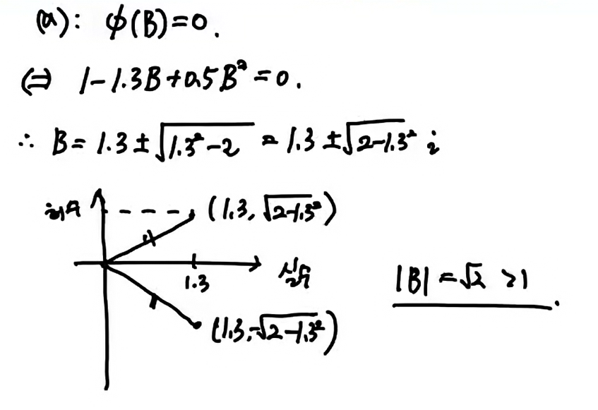
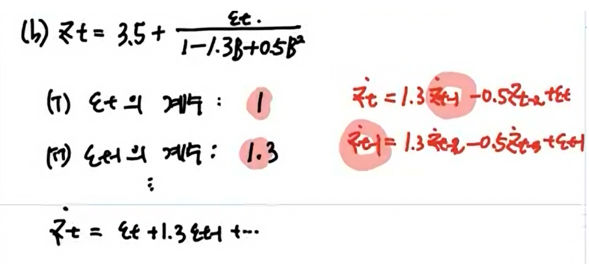
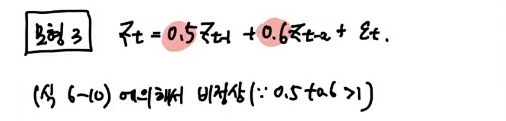
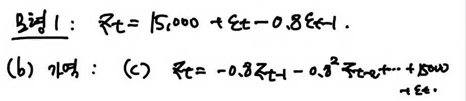
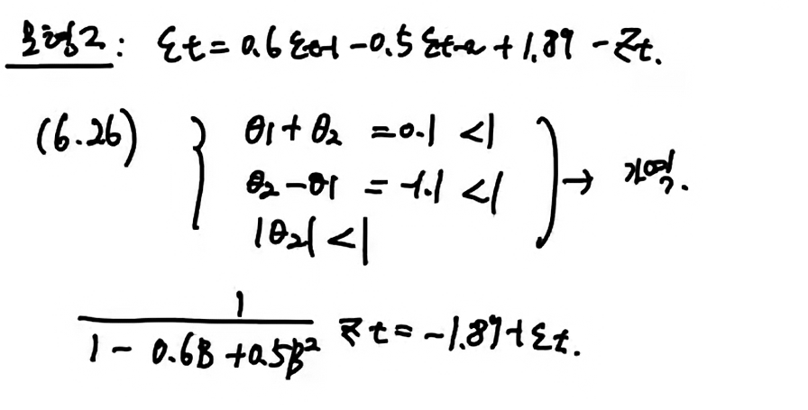
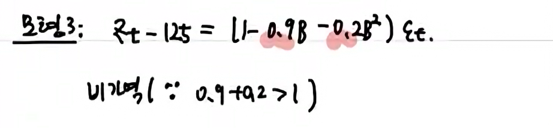

일반적인 ARMA(p,q)
- 처음 \((q+1)\)개의 eq를 연립하여 \(\gamma_0,\dots, \gamma_q\)를 구한다.
- 이후의 eq은 항상 아래의 형태를 따름.
\(\gamma_{q+1} = \phi_1\gamma_q + \phi_2\gamma_{q-1} + \dots +\phi_p\gamma_{q-p+1}\)
\(\gamma_{q+2} = \phi_1\gamma_{q+1} + \phi_2\gamma_{q} + \dots + \phi_p\gamma_{q-p+2}\)
\(\vdots\)
\(AR(p)\)모형과 동일. 즉, \(\gamma_{q-p+1}\) 이후의 ACF 모양이 \(AR(p)\) 모형의 ACF 모양과 동일.
\(\therefore ARMA(p,q)\) 모델의 ACF.

tail off after lag \(q-p.\)
tails off
6.3
정상성 조건을 만족하면, AR모형을 MA모형으로 나타내라.
- 모델1: \(Z_t = 158 + 0.8Z_{t-1} + \epsilon_t\)
- 정상성 만족
- MA모형으로
\((1-0.8B)(Z_t-\mu)=\epsilon_t.\)
\(0.2\mu = 158.\to \mu=158\times 5\)
\(Z_t = \mu + \epsilon_t + 0.8\epsilon_{t-1}+\dots\\ \quad =\mu + \frac{1}{1-0.8B}\epsilon_t\)
- 모델2: \((1-1.3B+0.5B^2)(Z_t-3.5)=\epsilon_t\)


- 모형3: \(0.5Z_{t-1}+0.6Z_{t-2}+\epsilon_t\)

6.4


